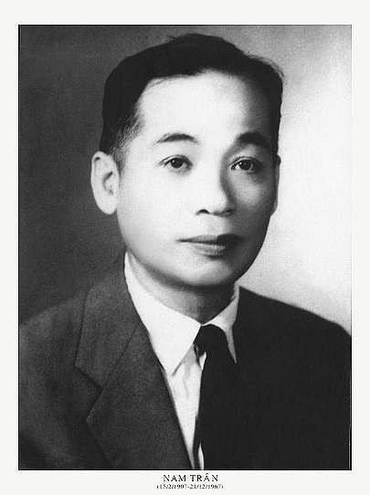

Chính tên là Nguyễn Học Sỹ. Sinh ngày 15- 2-1907 ở làng Phú Thứ Thượng, Huyện Đại Lộc (Tỉnh Quảng nam). Học chữ Hán đến năm 12 tuổi và đã tập làm những lối văn trường ốc. Sau học trường quốc học Huế, trường Bảo Hộ Hà nội. Có bằng Tú tài bản xứ. Hiện làm: Tham tá toà khâm sứ Huế.[1]
Đã đăng thơ: An nam tạp chí, Phong hoá, Tràng an.
Đã xuất bản: Huế, Đẹp và thơ, Tập đầu (1939).

.
Huế đẹp, Huế nên thơ. Ai chẳng nói thế? Ai chẳng thấy thế? Nhưng sao hình ảnh Huế trong thi ca lại tầm thường thế? Có lẽ cảnh Huế huyền diệu, quá mơ màng khồn biết tả thế nào cho thoát sáo. Cũng có lẽ ngắm cảnh Huế, Người ta khó tránh được cái buồn vơ vẩn đó là khí vị riêng của của xứ này và lòng người ta không đủ thản nhiên để ghi lấy hình sắc riêng của mỗi vật. Kể có ít câu của Thu Hồng và hai câu này của Quỳnh Giao cũng được:
Một hàng tôn nữ cười trong nón.
Sông mở lòng ra đón bóng yêu.
Nhưng tả cảnh Huế chưa ai bằng Nam Trân. Nam Trân không rơi vào khuôn sáo là vì người không mơ màng cũng không buồn vơ vẩn. Ở Huế mà ghét Nam Ai, nội chừng ấy cũng đã lạ [2]. Người chỉ thản nhiên nhìn cảnh vật chung quanh và ghi lại những nét già dặn.
Thơ Nam Trân thường mỗi bài là một bức tranh nhỏ trong ấy thế nào cũng có ít điều nhận xét đặc sắc. Thỉnh thoảng người cũng ghép vào trong cảnh một ít tình. Nhưng đầu người có nói đến tình yêu, lời thơ vẫn mực thước, vẫn không mất vẻ thiên nhiên. Điều ấy thấy ngay ở bài đầu quyển "Huế, Đẹp và Thơ" [3]: một mẩu cảnh xinh xinh, một chút tình phảng phất trong những vần nhịp nhàng và lặng lẽ như giòng Hương Thuỷ trong veo. "Sóng lòng" thi nhân có xao động cũng chỉ trong khoảng khắc nhưng mặt nước sông kia mà thôi, ý thơ nhẹ nhàng, điệu thơ uyển chuyển. Ta nên để ý bài thơ này sáu câu trên thất ngôn mà bốn cau dưới lục bát. Thất ngôn tả vẻ thản nhiên của người đẹp, lục bát tả chút xao động trong lòng người thơ. một cảnh hai tình, nên thơ cũng một bài hai điệu.
Về âm điệu, thơ Nam Trân thực dồi dào. Thi nhân không theo điệu nào nhất định. Trước mỗi cảnh, mỗi tình, người lại cố tạo ra một điệu thơ thích hợp. Câu thơ luôn luôn biến hoá: số chữ thay đổi từ một đến mười. Điệu thơ đó là điều tối quan hệ với Nam Trân; người luôn luôn tìm kiếm, vì người nghĩ rằng chỉ có người mới chịu nằm hoài trong một khuôn khổ.
Những điệu thơ cũng như ý thơ, ở Nam Trân, đều là kết quả của sự đắn đo kỹ lưỡng, sự suy tính siêng năng. Nam Trân luôn luôn tự chủ ngòi bút của mình một cách chắc chắn, không bao giờ phóng cho nó đi theo những nhạc điệu âm thầm một đôi khi vẫn thao thức trong lòng ta.
Cho nên muốn thưởng thức thơ Nam Trân ta cũng phải luyện lây tâm trí cho bình thản. Hãy xếp thơ Nam Trân lại những lúc lòng ta có chuyện xôn xao.
Lối thơ tả chân vốn xưa ta không có đây đó rải rác cũng nhặt được đôi câu, nhưng đến Nam Trân mới biệt thành một lối. Nam Trân đã tìm ra được một khoảnh đất mới và ở đó người ta đã dựng nên - ý chừng để sát nhập làng thơ Việt - cái cảnh núi Ngự sông Hương.
Thiết tưởng vị tình láng giềng đất Quảng Nam không thể gửi ra xứ Huế món quà nào quí hơn nữa: lần thứ nhất những vẻ đẹp xứ này được diễn ra thơ.
Octobre-1941
Chú thích:
[1] Đã được cải bố vào chính phủ Nam Triều, hiện giữ chức Tả lý Bộ lại (Lời chú in lần thứ hai)
[2] Xem bài ‘‘Giận khúc Nam ai’’
[3] Tức bài ‘‘Đẹp và Thơ’’
ĐẸP VÀ THƠ
(Cô gái Kim luông)
Kim Luông nhiều ả mỹ miều
Trẫm thương, trẫm nhớ, trẫm liều, trẫm đi.
Vua Thành Thái
Thuyền nan đủng đỉnh sau hàng phượng,
Cô gái Kim Luông yểu điệu chèo.
Tôi xuống thuyền cô, cô chẳng biết
Rằng Thơ thấy Đẹp phải tìm theo.
Thuyền qua đến bến; cô lui lại,
Vẩy chiếc chèo ngang: giọt nước gieo.
Đăm đăm mắt mỏi vì chèo,
Chèo cô quấy nước trong veo giữa dòng.
Biết không? Cô hỡi, biết không?
Chèo cô còn quấy, sóng lòng còn xao!
(Huế, Đẹp và Thơ)
HUẾ, ngày hè
Lửa hạ bừng bừng cháy,
Làn ma trốt trốt bay.
Tiếng ve rè rè mãi
Đánh đổ giấc ngủ ngày.
Đường sá ít người đi,
Bụi cây lắm kẻ núp,
Xơ xác quán nước chè,
Ra vào người tấp nập.
Phe phẩy chiếc quạt tre,
Chú nài ngồi đầu voi
Thỉnh thoảng giơ tay bẻ
Năm ba chùm nhãn còi.
Huê phượng như giọt huyết,
Giỏ xuống phủ lề đường.
Mặt trời gay gay đỏ
Nhuộm đỏ góc sông Hương.
(Huế, đẹp và thơ, 1939)
HUẾ, đêm hè
Trời nóng băm bốn độ.
Đèn, sao khắp đế đô,
Mặt trăng vàng, trỏn trẻn
Nấp sau nhánh phượng khô.
Ba dịp cầu Trường Tiền
Đứng dày người hóng mát;
Ngọn gió Thuận An lên,
Áo quần kêu sột sạt.
Đủng đỉnh chiếc thuyền nan
Qua, lại bến sông Hương...
Tiếng đờn chen tiếng hát,
Thánh thót điệu Nam Bường.
Hai tay xách hai vịm,
Một vài mụ le te,
Tiếng non rao lảnh lói:
Chốc chốc: "Ai ăn chè?"
(Huế, đẹp và thơ, 1939)
TRƯỚC CHÙA THIÊN MỤ
(Phỏng theo điệu bài "Đằng Vương các" của Vương Bột)
Êm êm dòng nước Hương Giang chảy,
Xúm xít thuyền con chỗ ba, bảy.
Tiếng hát ngư ông đẫm bóng cây
Như luồng khói nhẹ, lên, lên mãi.
Tháp cao dòm nước: vết meo trôi.
Đồi thấp sừng trăng dõi dõi soi.
Mờ ớ, xa xa gà gáy sáng...
Trong chùa cảnh cảnh tiếng chuông hồi.
(Huế, Đẹp và Thơ)
MÙA ĐÔNG
Cánh đồng An Cựu
Lá bàng
Như lá vàng
Rụng.
Ôi! đìu hiu
Cảnh chiều
Đông!
Ruộng ngập: mênh mông
Nước phẳng.
Cò bay, yên lặng,
Quanh đồng.
Thi tứ viễn vông:
Thần Tưởng tượng
Như đàn có đói lượn
Đồng không.
(Huế, Đẹp và Thơ)
GIẬN KHÚC NAM AI
Đừng kể nữa những mảnh tình tan tác.
Hãy đứng lên, Nhạc sỹ, với tôi, đi!
Tôi ghét anh mê giọng hát sầu bi
Và tung mãi tâm hồn thừa truỵ lạc.
Hãy đứng dậy! Vứt chiếc cầm ảo não!
Tôi cần nghe những khúc nhạc rất hùng
-Thét ngựa lòng phi mãi chẳng chồn chân -
Sáng như gươm tuốt, mạnh như luồng bão.
Ôi nhạc sĩ, thật anh người thậm tệ:
Quan hoài chi những lối hát mê ly,
Những câu ca không Đẹp lại không Thi
Của kỹ nữ vọc cuộc đời ê chệ?
Hãy cung kính nhượng các ngài tuổi tác
Những bản đờn, dịp hát thiếu tinh thần.
Hãy ra nghe sóng vỗ, ngắm mây vần
Rồi sáng chế cho tôi vài điệu khác
(Huế, Đẹp và Thơ)
NẮNG THU
Hát bài hát ngô nghê và êm ái,
Bên sườn non, mục tử cỡi trâu về,
Nắng chiều rây vàng bột xuống dân quê,
Lúa chín đỏ theo gió nồm sắp mái.
Trên suối nhỏ, chiếc cầu treo hẻo lánh
Tốp người qua, lẩy bẩy vịn thanh ngang
Lũ trẻ con sung sướng nổ cười vang
Đùa với bóng chảy theo giòng nước lạnh.
Dãy núi tím bỗng thay mầu xanh ngắt
Rồi ố làn trong giây khắc nhá nhem.
Âm thầm cảnh vật vào Đêm:
Vết ráng đỏ, tiếng còi xa cũng tắt.
(Huế, đẹp và thơ, 1939)